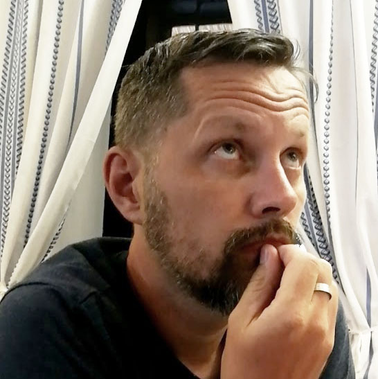

About
> talán kiváncsivá tettelek?

Balog Róbert vagyok, de szólíts csak Bobbynak!
Mezőberényben, egy Békés-megyei kisvárosban élek. Mechatronikai technikusként végeztem 1997-ben Békéscsabán, majd 1999-ben ugyanebben a városban, egy műszaki üzletben helyezkedtem el kezdetben mint bolti eladó, később boltvezető.
Ezen időszak alatt saját erőmből képeztem magam grafikai szoftverek, valamint html és css ismeretekben, hiszen ezek a területek mindig is érdekeltek.
Az alábbi grafikai és videós szoftvereket használom készség szinten:
- Adobe Photoshop
- Adobe Indesign
- Adobe Illustrator
- Corel Draw
- Inkscape
- Adobe Premiere Pro
- KdenLive
2008-ban munkahelyet váltottam. Grafikusként helyezkedtem el egy webstúdiónál, ahol folytattam önképzésemet és elmélyedtem a javascript, a php és a mysql rejtelmeiben.
2009-ben összeolvadtunk egy nagy szoftverfejlesztő céggel, ahol a grafikusi feladatok mellett már fullstack feladatokat is elláttam.
Úgy vélem, önképzésem során szerencsésen választottam meg a tanult készségek sorrendjét, hisz így tudtam fokozatosan fejlődni.
- HTML
- CSS
- Actionscript / Javascript
- PHP
- MySQL
Jelenlegi munkahelyemre 2014-ben érkeztem, elsősorban grafikusként, de itt is tudtam kamatoztatni a megszerzett tudásomat. Saját ügyviteli rendszert készítettem a nyomda számára, amelyet azóta elégedetten használnak a kollégák és amelyet természetesen folyamatosan fejlesztek.
A munka mellett meglehetősen aktív életet élek.
2014-óta aktívan futok. Többszörös maratonistának mondhatom magam.
Gyerekkorom óta pedig folyamatosan elkísért a néptánc. 2016-óta az Ős Berény Táncegyüttesben alapítójaként pallérozódom.
2019 karácsonya óta pedig saját, elsősorban informatikával foglalkozó YouTube csatornámat, a gemini műhelyt is terelgetem az ismertté válás felé.
Hobbijaim:
- minden, ami informatika
- futás
- néptánc
- minden, ami sci-fi
- írás
Habár több éve dolgozom front- és backend területen, a készségeimet önképzéssel szereztem, így mindenképp fontosnak tartom, hogy szakemberektől kapjak átfogó képet ezen területekről, megismerjem az aktuális trendet, hogy képezhessen magam tovább, immáron segítséggel.